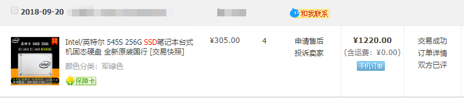
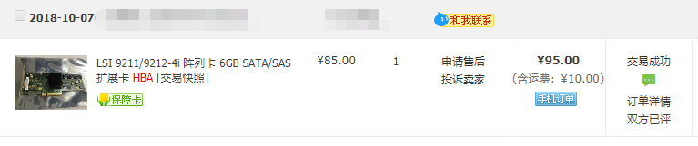
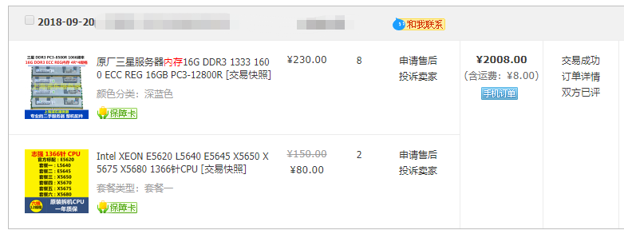
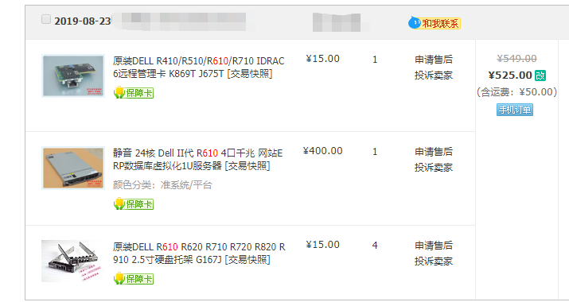
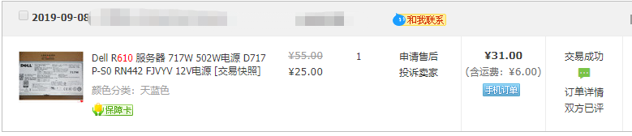

前言
每一个打工仔都有一个梦想，就是要有一台更快的电脑。这和男人永远想要更贵的表，女人想要更贵的化妆品一样，永无止尽
背景介绍
整套环境其实是慢慢悠悠凑起来的，期间也更换过几次。不感兴趣的可以直接到文末看推荐配置和价格汇总。
期间经过了多次倒腾，基本上算是告一段落
流水
第一次购买
2016年10月，第一次买主要是想测试Azure， Stack，考虑的主要是性价比，怎么便宜怎么来，当然造型也就特别的寒酸。当时选了
- 戴尔C6100的主板，纯主板，只要
200块 - CPU用的E5620两颗，这是一个4核8线程的U，一颗大概是
50块。 - 内存是12根8G的，凑够96G。85一根，内存花费
1020 - 在这个列表之外，买了一个SAMA的电源，
230块。 - 其他都是一些零配件


硬盘零零散散的找了几块退役的小HDD，总之HDD的速度非常不理想。
第二次购买
因为长期外出打工，这机器开机应该不到100小时。
现在CPU内存主板已经有了，还缺硬盘。AzureStack需要最少3块数据盘，以及一块系统盘，所以我在2018年10月附近，买入了一波硬盘
- 4块Intel的545S的固态硬盘，256G容量，总价1220

因为主板自带的SATA非常不给力，所以购入了一张HBA卡,把硬盘都接到新卡上，现在AzureStack的实验能够更好的完成了。
- 95一块，HBA卡。

另外这次消费也属于被消费，主要是当时AzureStack的POC环境，不知道被哪个混球改了需求配置，最低部署需要128G内存，以及12个物理核的CPU（也就是说至少两个6核CPU）而当时内存槽也不够了，所以换换换。
- 230一根，买入16G内存8根。
- 80一块，买入6核L5640两颗

当时内存价格也是过山车，还好在一个合适的机会，我以1750的价格卖了之前的96G。所以完全不亏啊不亏啊不亏啊
- 1750卖出之前的96G
第三次购买
由于内存波动太厉害，到2019年5月的时候，跌到了130一根16G，简直就是白给，我买入了4根平仓，现在手里就一共有192G内存。另外一个原因是，传闻AzureStack又来一次军备竞赛，内存需求改成了192…………
- 230一根买入8根
- 130一根买入4根
- 总价1840+520=2360
- 如果是现在买的话（2020.3），16G reg 1333的内存大概175，总价2100.


第四次购买
服务器一直裸奔，到了19年8月，实在是无聊，就买了一台戴尔的R610,1U服务器，有6个2.5寸硬盘槽位。
- 价格没看错，带远程管理，带一个电源，带另个散热器以及4个硬盘托架，只要550. 
开机之后发现，CPU和内存192满配的时候，标配502W电源无法开机。那时候还比较淳朴，想着再来一颗肯定就起来了呗，所以下单。

结果买回来之后还是不能开机，网上一搜才知道，要买700W电源。所以当初为了平仓买的一共两颗500W电源就砸手里了。继续买700W电源，终于顺利的做朋友了。

总结
最终方案就是这样了
- 内存：192G 2360
- 硬盘：256G 4块 intel 545s 1220
- 服务器：戴尔R610 带远程管理 550
- CPU：L5640 160两颗
- HBA卡加线：150左右
- 总价 4440
如果现在购买的话，大概价格是这样，而且硬盘也没必要买那么小的了。
- 内存：192G 2100
- 硬盘：480G 4块 HP/intel/toshiba JD购买，按照一块480计 1920
- 服务器：戴尔R610 380+50运费
- CPU：X5650 190两颗
- HBA卡加线：150左右
- 总价 4790
费用大头在于内存和硬盘，觉得用不上，可以酌情减少
全新购买，现在也可以买E5-26XX的CPU，性能更好。